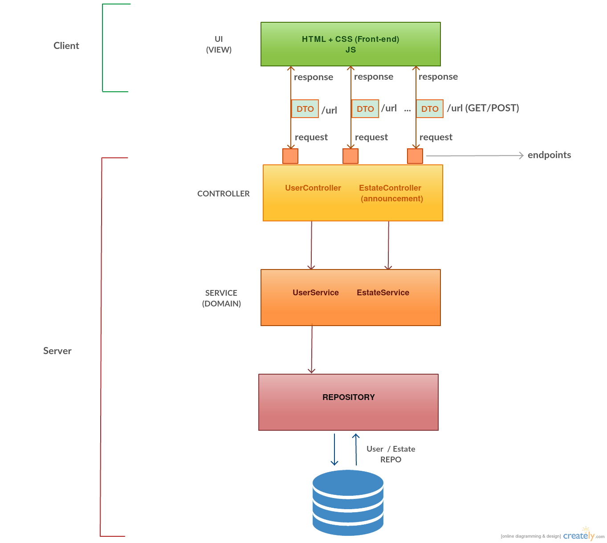
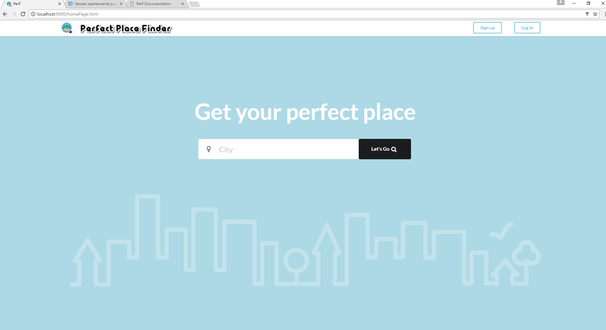
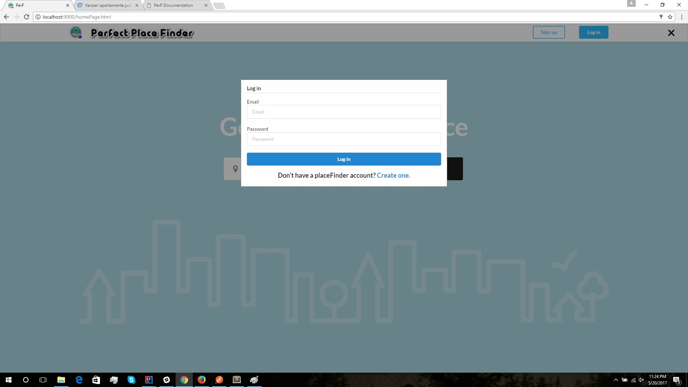
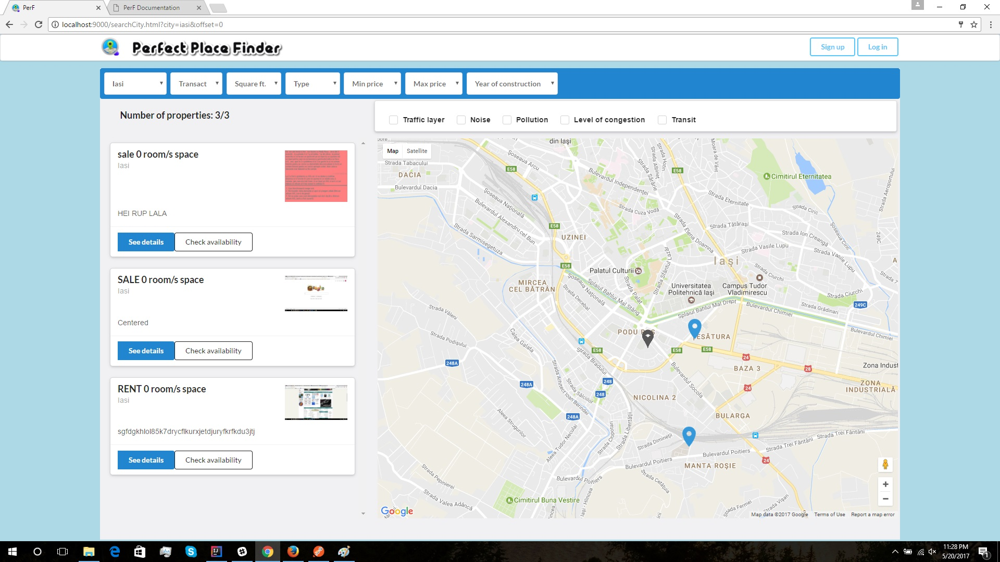
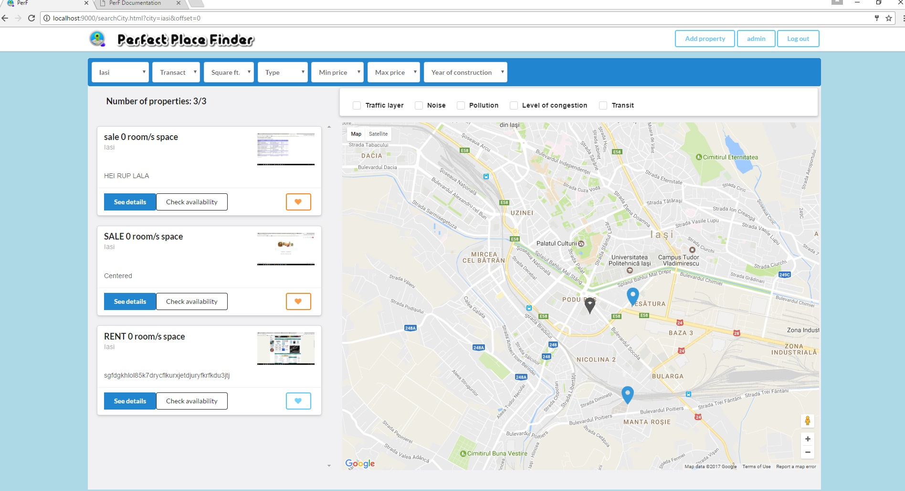
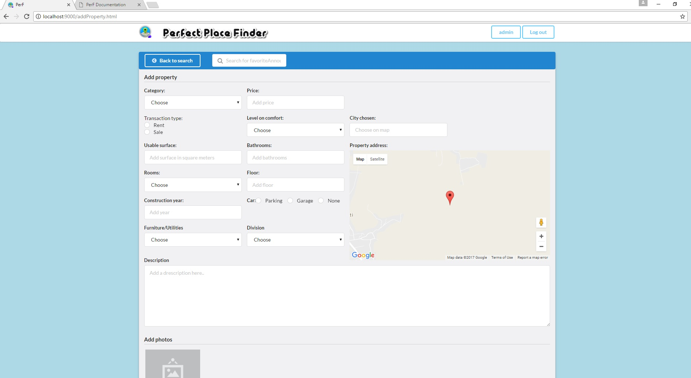
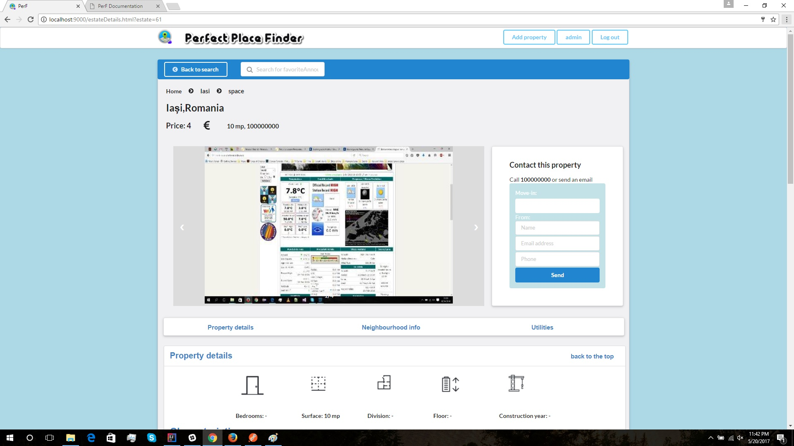

E necesara o aplicatie Web menita a gestiona eficient tranzactiile imobiliare. Sistemul va permite managementul
unor imobile spre vanzare si/sau inchiriere, inclusiv informatii precum descriere, pret, coordonatele locatiei,
date de contact, starea cladirii, facilitati oferite, riscuri posibile etc. Pentru localizarea facila, se va
recurge la un serviciu de cartografiere (e.g., OpenStreetMap). In plus, se va oferi si posibilitatea atasarii
de straturi suplimentare pentru vizualizarea unor informatii de interes -- e.g. diversele tipuri de poluare,
nivelul de aglomeratie, numarul de raportari de jafuri, costul mediu de trai, temperatura medie anuala,
existenta parcarilor ori altor obiective de interes (i.e. magazine) si altele. Pentru generarea diverselor
straturi se poate recurge la date agregate existente in cadrul unor platforme sociale (e.g., Twitter, Facebook).
De exemplu, pentru stratul poluare fonica, se pot agrega resurse marcate cu tag-ul "#noise" ori "#smog".
Utilizatorii interesati de inchirierea/cumpararea unei locuinte (e.g. apartament, casa, loc de veci etc.)
vor putea efectua diverse operatiuni folosind harta pusa la dispozitie: selectarea zonei de interes pentru
afisarea optiunilor existente, selectarea diverselor straturi pentru luarea deciziei, filtrare in functie de
alte criterii (e.g., pret, suprafata, facilitati).
2. Etapele dezvoltarii proiectului
Design/Arhitectura
Modelare baza de date
Creare pagini front-end
Design back-end
Design proceduri oracle
Design & implementare arhitectura MVC
Implementare proceduri oracle
Implementarea view-urilor pe baza html & css & javascript
3. Arhitectura aplicatiei

Aplicatia va fi proiectata pe arhitectura MVC. Aplicatia va fi una multi-page, adica in functie de actiunile utilizatorului browserul va naviga catre alta pagina.
4. Progresul inregistrat
Front-end
Pagini create
– Home page
Pagina de start expune campuri de logare, inregistrare, precum si un camp pentru introducerea unui oras unde se doreste cautarea anunturilor.

Pagina de start cu campul de cautare dupa oras.

Pagina de start cu login.
– Pagina de cautare anunturi dupa filtre
Pagina de cautare a anunturilor contine diferite filtre necesare cautarii anunturilor, precum si anunturile gasite si harta cu pin-urile lor.

- Pagina de cautare pentru utilizatorii logati
Pagina de cautare pentru utilizatorii logati care pot salva anumite anunturi

- Pagina de adaugare anunt
Pagina de adaugare a unui anunt (completare formular + adaugare de poze).

- Pagina de vizualizare detalii despre anunt

Back-end
Pe partea de back-end se va folosi o baza de date care va contine script-uri de creare a unor tabele, popularea cu ajutorul unor pachete si blocuri din PL\SQL, creeandu-se
triggere si indecsi, acestea fiind adaugate intr-un fisier cu inregistrari din tabele.
5. Tehnologii utilizate
1. Pl\SQL - JAVA
Pentru scrierea aplicatiilor care acceseaza serverul Oracle XE o solutie este limbajul Java. De altfel firma Oracle Co. pune la dispoziţia utilizatorilor mediul JDeveloper .
Se va folosi mediul de pragramare Intellij.
Hibernate este un ORM (Object-relational mapping) framework matur, bine gandit si dezvoltat. Este scris in Java si este destinat pentru rezolvarea problemelor de persistenta ale
aplicatiilor J2SE si J2EE. In prezent este foarte des folosit dintre framework-urile ORM existente, in aplicatiile Java pentru web.
2. Spring framework - MVC
Spring Framework urmăreşte să ofere infrastructura necesară pentru realizarea aplicațiilor Java, astfel încât programatorul să se poată concentra asupra dezvoltării efective
de cod. Spring utilizează pe scară largă obiecte Java clasice (POJOs – Plain Old Java Objects).
3. Semantic UI
Framework-ul Semantic UI isi pune ca scop usurarea dezvoltarii web. Semantic UI se afla pe partea de front-end, asta insemnand ca este o interfata intre utilizator si
codul de pe partea back-end. Este si un framework de aplicatie web, un software framework care este creat sa suporte dezvoltarea website-urilor si aplicatiilor web.
Semantic UI ajuta la layout si design usor si totodata responsive pe orice platforma folosindu-se de clase si functii predeclarate in fisiere externe cum ar fi semantic.js,
semantic.css. Semantic UI poate la randul lui sa fie formatat de fisierele css care prin cascading vor da overwrite la anumite atribute si functii facand aplicatia web pe
placul utilizatorului, dar fara a mai fie nevoie sa se scrie tot codul de la inceput .
4. HTML / CSS
Pentru partea de front-end se foloseste html. Scopul HTML este mai degraba prezentarea informatiilor – paragrafe, fonturi, tabele etc. – decat descrierea semanticii
documentului. CSS este un standard pentru formatarea elementelor unui document HTML. Stilurile se pot atașa elementelor HTML prin intermediul unor fișiere externe.
5. jQuery - JavaScript
jQuery este o platforma de dezvoltare JavaScript. De asemenea, este necesara
referinta la API-ul jQuery.
6. API-uri utilizate
Google Maps este un API care ne pune la dispozitie harta pe care vor fi afisate diverse straturi, precum si anunturile (clusterizate).
GitHub este un serviciu de gazduire web pentru proiecte de dezvoltare a software-ului care utilizeaza sistemul de control al versiunilor Git. GitHub ofera planuri
tarifare pentru depozite private si conturi gratuite pentru proiecte open source. De asemenea, exista o optiune speciala, care este atribuita studentilor, unde au voie la 5
proiecte private fara sa existe un plan tarifar.